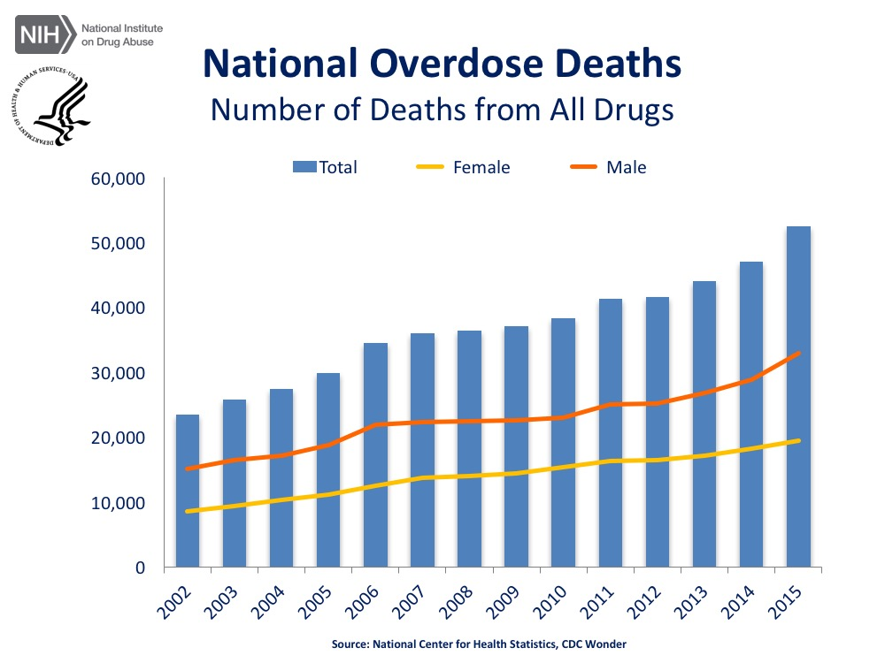
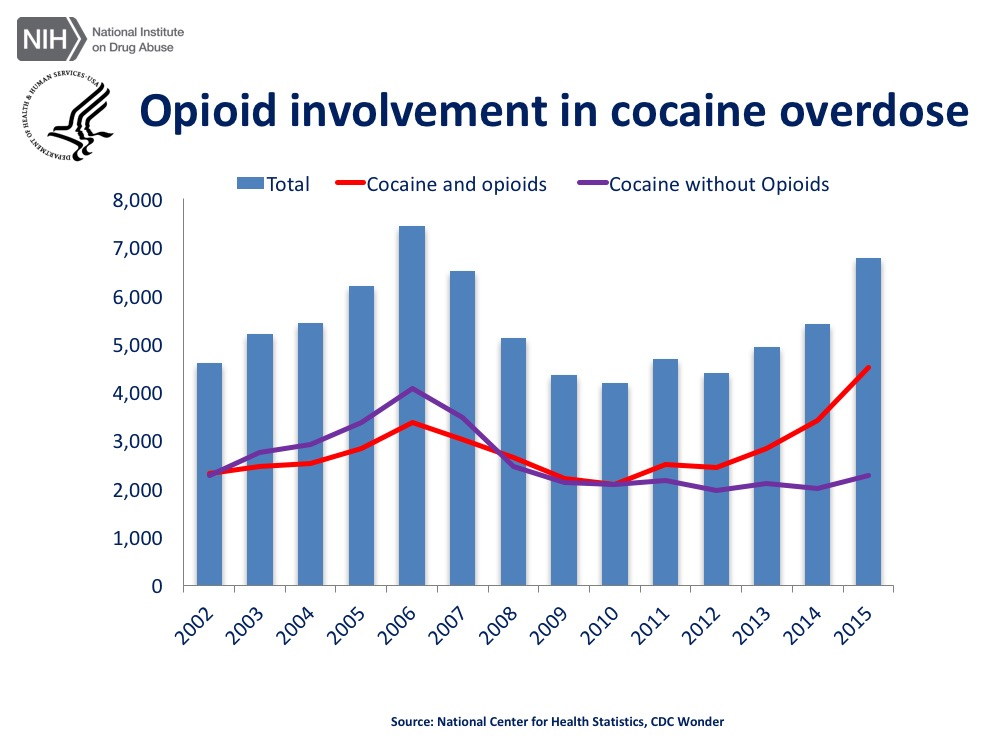

Addiction Facts

INTERESTING FACTS
Data from the National Vital Statistics System, Mortality (NCHS Data Brief No. 273, February 2017)
- The age-adjusted rate of drug overdose deaths in the United States in 2015 (16.3 per 100,000) was more than 2.5 times the rate in 1999 (6.1).
- Drug overdose death rates increased for all age groups, with the greatest percentage increase among adults aged 55–64 (from 4.2 per 100,000 in 1999 to 21.8 in 2015). In 2015, adults aged 45–54 had the highest rate (30.0).
- In 2015, the age-adjusted rate of drug overdose deaths among non-Hispanic white persons (21.1 per 100,000) was nearly 3.5 times the rate in 1999 (6.2).
- The four states with the highest age-adjusted drug overdose death rates in 2015 were West Virginia (41.5), New Hampshire (34.3), Kentucky (29.9), and Ohio (29.9).
- In 2015, the percentage of drug overdose deaths involving heroin (25%) was triple the percentage in 2010 (8%).
Why Laced Heroin Is More Dangerous and Increases Risk of Opioid Overdose
Regular heroin obtained on the street is derived from the poppy plant. Manufacturers “cook” heroin before selling it on the black market. Heroin itself is dangerous, as it is a central nervous system depressant. This means that it slows heart rate and breathing, leading to potentially deadly consequences. Furthermore, heroin is highly addictive, leading to compulsive drug-seeking behavior that individuals have difficulty controlling.
As dangerous as heroin alone can be, it is even more dangerous when laced with other substances. Heroin is most commonly laced with fentanyl, a synthetic opioid made in laboratories. Fentanyl can be 100 times as potent as morphine and 50 times as powerful as heroin. A related substance called carfentanyl is 100 times more powerful than fentanyl, making it very dangerous.
Because fentanyl and carfentanyl are produced in illicit labs, their potency and quality is not well controlled. Furthermore, people purchasing laced heroin on the street may be unaware that the drug is laced with these more powerful substances. This means that only a small amount of the drug can have deadly consequences. The Drug Enforcement Agency reports that Mexican cartels have accelerated smuggling of fentanyl over the past two years, which may be leading to the clusters of opioid-related overdose deaths occurring across the country.
In some cases, heroin may also be laced with cocaine, which is a central nervous system stimulant. Mixing a stimulant with a depressant can be particularly dangerous, as this combination can have very unpredictable effects.
- 


- 